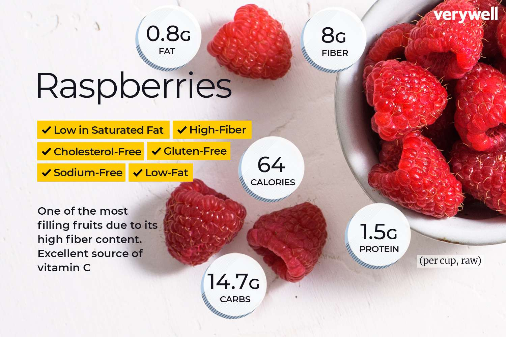
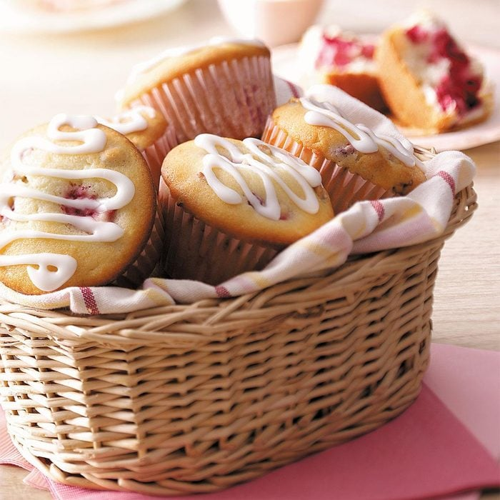
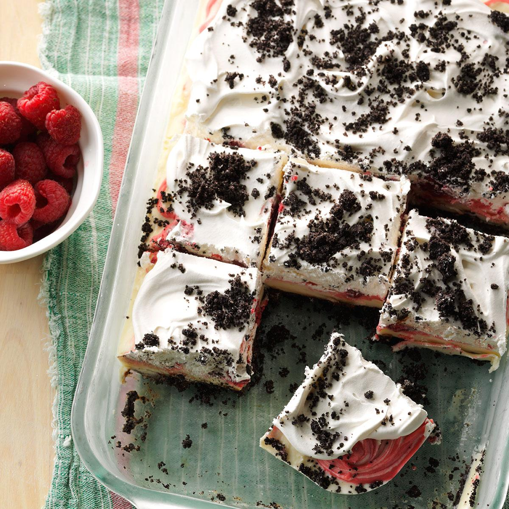
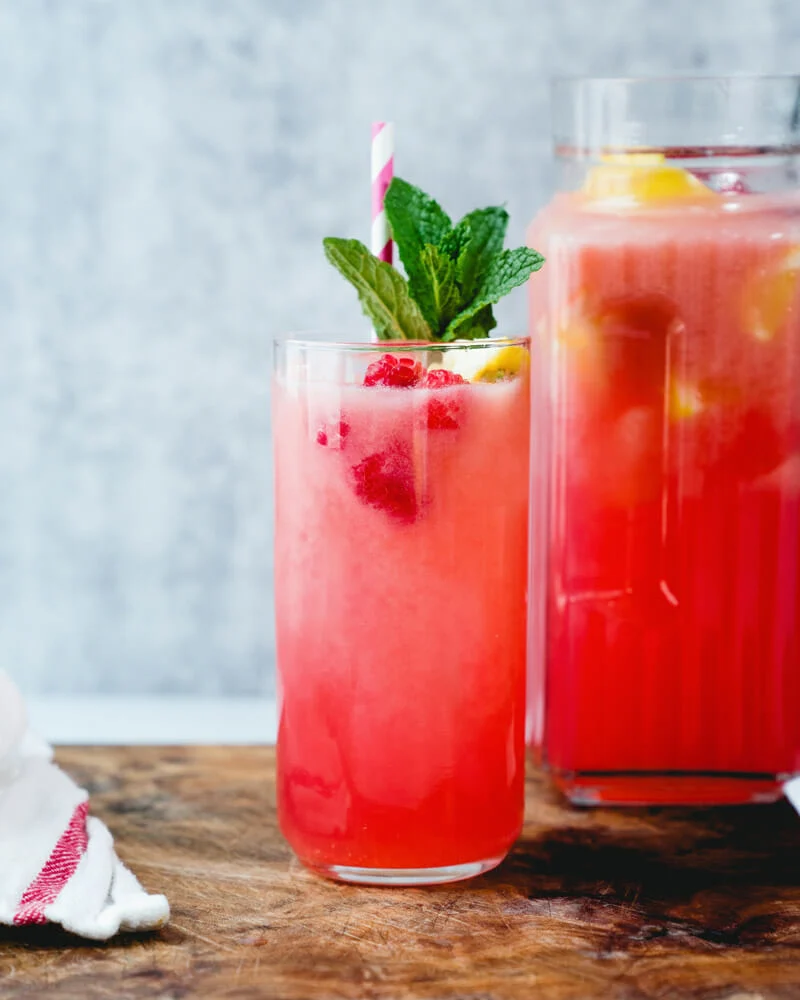
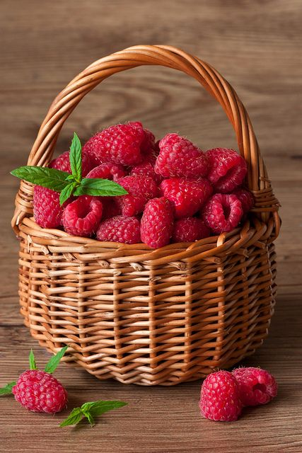

|
Raspberries! |
|
Raspberries are small, delicate berries known for their vibrant red
color and sweet-tart flavor. They belong to the genus Rubus and are
rich in vitamins, minerals, and antioxidants, particularly vitamin C
and manganese. These nutrients contribute to their numerous health
benefits, which include anti-inflammatory properties and potential
cancer-fighting effects.
|

|
|
In terms of culinary uses, raspberries are highly versatile. They
can be enjoyed fresh, used in baked goods like cakes and muffins, or
made into jams and jellies. Raspberries also add a delightful flavor
to desserts such as mousses, tarts, and sorbets. Their bright color
and distinct taste make them a popular ingredient in smoothies and
cocktails as well. Here are my favorite recipes involving
raspberries:
Raspberry Cream Cheese Muffins
Raspberry Ice Cream Delight
Raspberry Cocktails
|
|



|
|
Beyond their taste, raspberries are often used in health-focused
recipes due to their high fiber content and beneficial plant
compounds, making them a popular choice for those looking to add
both flavor and nutrition to their meals.
|

|